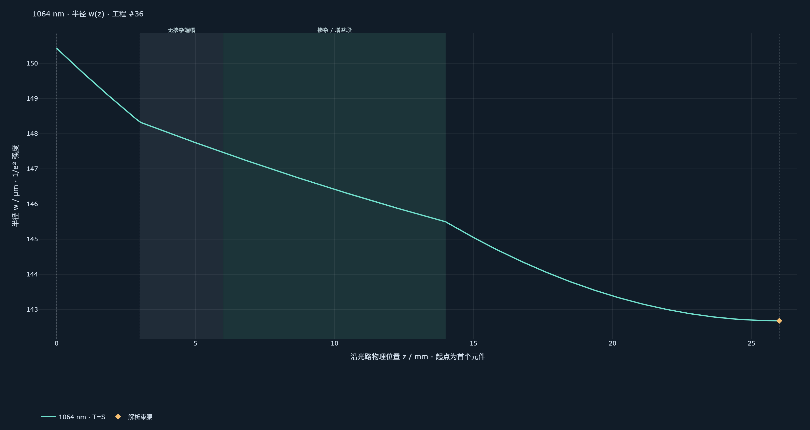
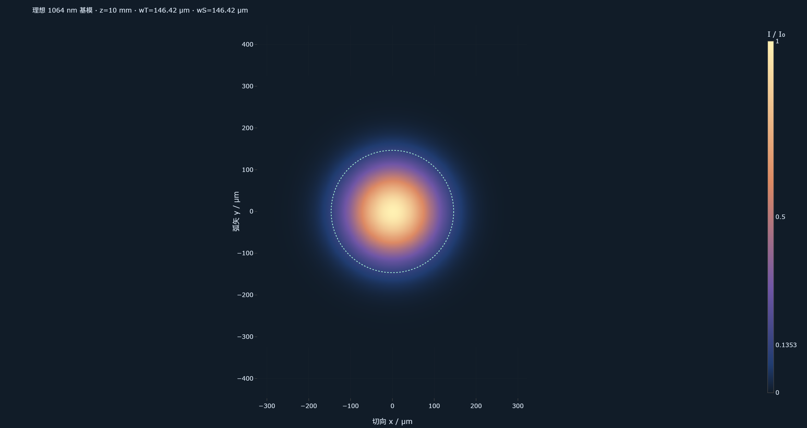
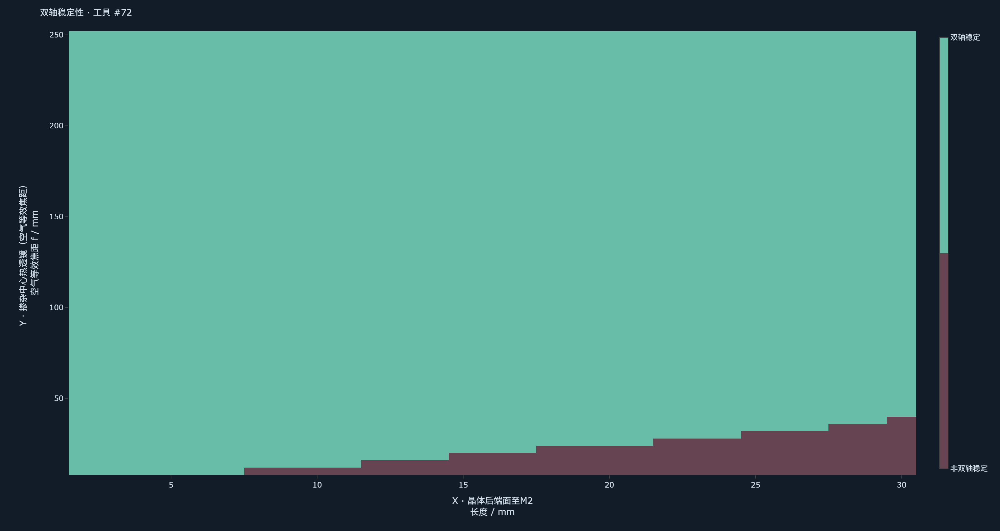

LASERCLAW 2.0 · 2026-10-27 · 真实订阅调用与独立数值审验
Codex exec 已跑通；光路几何通过复核。
最高输出功率尚未求得。
模型为 gpt-6.1-sol，使用本机官方 Codex CLI 的 ChatGPT 登录。先在案例5的隔离备份中运行和审验，再把任务#14、工程#36、报告#38及原始计算记录追加到原数据库；所有旧版本均保留。计算参数、工具记录与模型文件附在本报告中；不包含本机数据库、账户登录或密钥。
审验结论：本轮应标为“部分完成”。Agent能读取元件、建立工程、调用计算、比较场景并提出补测指导。它没有完成“6 W下最高输出功率与效率”的优化，也没有用稳定性或模半径冒充输出功率。当前物理工具是LaserClaw Python/NumPy ABCD，未集成Rezonator C++运行时。
本轮已交付的条件候选
前间隙3 mm
晶体总长11 mm
掺杂段8 mm
后间隙12 mm
两镜间距26 mm
M1为已有R200 mm凹面输入镜；M2为已有平面输出镜，角色和曲率保持锁定。z=0取M1腔内反射面，距离量到光学面。此表暂把无掺杂3 mm全放在泵浦侧；朝向仍是假设。保留已经搭好的R50准直镜和FL100聚焦镜，不编造其绝对坐标。
| 元件／边界 | 物理z / mm | 1064 nm冷腔半径w / μm |
|---|
| M1 已有凹面输入镜 R200 | 0.000 | 150.431 |
| M1至晶体前端面：可调参考3 mm | 3.000 | 148.329 |
| YVO4前端帽：3 mm全在泵浦侧的假设 | 6.000 | 147.464 |
| Nd:YVO4掺杂段前半：4 mm | 10.000 | 146.417 |
| Nd:YVO4掺杂段后半：4 mm | 14.000 | 145.495 |
| YVO4后端帽：本朝向假设0 mm | 14.000 | 145.495 |
| 晶体后端面至M2：可调参考12 mm | 26.000 | 142.680 |
| M2 已有平面输出镜，实际T未知 | 26.000 | 142.680 |
冷腔m=0.799188685，两轴稳定；计算束腰位于M2，1/e²强度半径142.680 μm。掺杂中心z=10 mm，半径146.417 μm。这些是模型结果，没有测得的808 nm光斑，也不是工作功率下的实测光场。

绿色区域是掺杂段，灰色区域是无掺杂端帽。纵轴自动缩放展示约143—150 μm的变化，图不表示激光已出光。

z=10 mm的理想TEM00强度分布，wT=wS=146.417 μm；虚线是I/I₀=e⁻²的边界。它由计算半径生成，不是相机照片。
独立复核与工作流审验
采用单独编写的2×2矩阵乘法和复数固定点求解，没有调用LaserClaw物理模块。冷腔又用平凹腔解析式核对：L_eff=3+12+11/n=20.081131488 mm，n=2.1648721403743165，m=1−2L_eff/200。
- 三组完整场景的矩阵、稳定参数和逐元件半径吻合；半径最大误差2.78×10⁻¹⁷ mm。
- 两种朝向各1769格，共3538格；稳定性分类差异为0。前端帽模型稳定1679格，反向模型1667格。
- 另核对后隙7点及两组热焦距各10点的一维扫描，稳定参数吻合。
- 实际Agent成功执行10次读取／计算，零工具错误，并保存工程。已知硬件未替换，输出镜T未知未被改写成5%。
- 发现并修复：旧报告入口优先使用17 mm专用设计。现在报告／计划使用最新光学工程，同时保留旧数据的历史来源；新增3项回归测试。实际Codex生成报告#38已正确采用11 mm总长、8 mm掺杂段。
热扫描的薄透镜参数是空气等效焦距f_air；晶体内物理焦距f_inside=n×f_air。两者已核对，不能把50 mm晶体内焦距直接填成工具的50 mm。扫描只是敏感性场景，未由6 W推断实际热焦距。

前端帽朝泵浦的条件模型：后隙2—30 mm，空气等效热焦距10—250 mm。绿色为双轴几何稳定；网格和薄透镜假设不构成6 W热态或效率的预测。
为什么还不能给出“最高效率的唯一位置”
ABCD工具求解传播、本征模和几何稳定性；它没有增益饱和、输出功率、空间温度场或无膜端面的复合腔求解器。泵浦焦点进入掺杂段只约束位置，尚未给出泵浦包络、吸收与损耗。现在把26 mm说成功率最优，属于没有证据的结论。
主要效率定义为η_inc=P1064,out/P808,inc，入射功率量在实际M1后、晶体前端面；吸收效率另列η_abs=P1064,out/P808,abs。最大输出、斜率效率与起振阈值分别报告。6 W是源的标称上限，不能代替任一实测分母。
完成效率优化的下一步
优先1：能否取得经808 nm抑制的1064 nm定量检测结果，并核实晶体端面和两片腔镜的镀膜数据？
先确认是否存在可测1064 nm输出，区分探测盲区、耦合率和端面反馈问题；这是继续追求效率而非盲目调间距的前提。
获取方法：使用1064 nm校准功率计或合适探测器，配已知透射率的1064通带／808抑制滤光组合，在相同设置下记录暗背景、泵浦开启信号和测量下限。向供方按晶体ID及腔镜订单索取晶体S1/S2在808/1064 nm的R，以及M1/M2在808/1064 nm的R/T和镀膜面方向；不能用用途标签替代数值。
提交格式：仪器型号、滤光片型号及T@1064／抑制@808；驱动设置、P1064_mW、背景_mW、检测下限_mW；供方原始曲线或R/T百分数。没有仪器或资料则直接说明。
优先2：能否测透过实际M1之后的808 nm两轴焦散，并记录测量时的光路间距？
直接确定真实泵浦尺寸与位置，包含M1基底折射影响，据此选择M2间距和透镜位移；焦点落入掺杂段本身不能给出匹配效率。
获取方法：保留当前光纤、R50、FL100及M1设置，低功率、移去晶体并退出M2，用适当衰减后的光束分析仪或刀口＋功率计测焦点两侧至少10个z位置。记录z相对M1腔内面的位置，及各表面间距。取得空气焦散后再通过介质传播模型映射回晶体，不能把空气焦点直接当晶体内焦点。
提交格式：CSV：z_mm,size_x_um,size_y_um；注明1/e²半径或D4σ直径、功率与衰减、光路设置；附光纤端—R50、R50—FL100、FL100—M1的表面间距mm。无测量工具请说明可用仪器。
优先3：到达晶体的入射泵浦功率和可归属晶体吸收的泵浦功率分别是多少？
确定效率分母、定位传输损耗，并判断标称6 W实际提供了多少可用泵浦；也为热态分析提供约束。
获取方法：同一驱动设置下，移去晶体在其前端面位置测M1后的808 nm入射功率；装回晶体后用波长选择测量记录残余透射及可收集的反射泵浦。只测入射减透射时先报告消光差，不直接称吸收功率；需扣除反射和散射并考虑实际多程。
提交格式：驱动设置；P_inc_W、P_trans808_W、P_ref808_W及收集方式、未计散射说明；注明晶体朝向和M2是否在位。
优先4：无掺杂3 mm具体分布在前后哪一端，晶体轴、冷却与泵浦偏振如何安排？
确定真实掺杂边界、吸收和热透镜位置；控制热漂移后才能公平比较不同位置的连续输出。
获取方法：向供方索取结构图或通过侧面观察结合供方说明确认接合边界，不从荧光亮度单独推断长度；记录夹持接触面、导热介质、冷却方式、温度及晶体轴标记，偏振可用808 nm分析器低功率测量。
提交格式：前端帽_mm、掺杂8 mm、后端帽_mm及传播方向；冷却方式、温度_°C、导热介质；泵浦偏振相对晶体轴方向或未知。
优先5：前后机械净空和可调行程是多少？M1基底资料能否取得？
把候选转成真实安装位置；若取得M1材料、厚度及另一面曲率，可建立泵浦厚透镜模型。直接测M1后焦散也可绕过这部分未知。
获取方法：量到光学面并记录镜架、晶体夹具允许的最小前后间隙和行程；向镜片供方索取M1材料、中心厚度、两面曲率及镀膜面说明，避免将机械外壳间距当光学距离。
提交格式：最小前隙_mm、最小后隙_mm、M1／晶体／M2可调范围_mm；M1材料、中心厚度_mm、背面曲率_mm或平面、镀膜面；未知如实记录。
取得定量输出后，在相同入射泵浦、偏振和冷却条件下比较后隙10、12、14 mm，每次重新对准并微调泵浦焦点，记录稳定输出与漂移，再围绕较优位置细扫。实验比较可以找出所测范围的较优布置，不能无条件称全局最优。
前端验收范围
- 首页双接入方式、Codex登录状态与真实连接测试；API密钥显隐与原配置保留。
- 优先显示光场和几何指标，编辑器、高级波前数据与来源按需展开；光场／工程可展开全宽。
- 半径／直径、μm／mm、全光路／晶体／掺杂段、截面光斑与CSV／SVG／PNG导出。
- 不同朝向和冷热腔场景分别选择；二维扫描显示物理量、单位、稳定边界和无效点，避免误读。
- 案例概览优先显示最新工程；原始参数作为历史记录收起，避免旧17 mm被误认为当前尺寸。
- 后端540项测试通过、3项跳过；前端ESLint和生产构建通过。Plotly按需加载，构建仍有大文件体积提示。
真实工具调用清单
| 记录 | 工具 | 目的 | 状态 |
|---|
| #70 | read_optical_project | 读取最新可编辑工程及已有镜面锁定，按用户最新11 mm晶体尺寸修正模型并开展朝向、间距与热透镜比较。 | 通过 |
| #71 | list_inventory | 核实现有元件库中的腔镜、透镜、晶体及测量器件记录，保留用户确认的已有硬件，避免将旧采购提案或未知镀膜数值当成实物规格。 | 通过 |
| #72 | scan_optical_system_2d | 按最新11 mm晶体、8 mm掺杂段，扫描后间隙2—30 mm与空气等效热焦距10—250 mm的二维稳定性；暂按3 mm端帽全在泵浦侧，比较可搭建候选的热透镜敏感性，不作输出功率优化。 | 通过 |
| #73 | scan_optical_system_2d | 计算反向晶体的同范围二维稳定图，与端帽朝泵浦结果比较，检验后间隙候选对热透镜位置的敏感性；两种模型暂将全部3 mm无掺杂段置于一端，实际端帽分配待确认。热焦距为空气等效值，不代表6 W实测热态或输出功率。 | 通过 |
| #74 | scan_optical_system | 比较最新11 mm晶体在后间隙6、8、10、12、14、16、18 mm时的冷腔稳定性和镜面模半径，为选择可调装机候选提供依据；采用正入射、π偏振标量折射率假设，不将模尺寸或稳定性作为输出功率评分。 | 通过 |
| #75 | save_optical_project | 保存符合最新实物尺寸的可编辑冷腔参考工程及1064 nm光场半径曲线，锁定已有腔镜面形，明确标注未测泵浦、端帽朝向和功率模型边界。 | 通过 |
| #76 | analyze_optical_system | 精确计算反向晶体参考候选的冷腔模场，显式给出z=3、7、11、14 mm处的掺杂起点、中心、终点及端帽后端边界，与已保存的端帽朝泵浦工程比较；不将计算腔模当作实测泵浦或功率最优结果。 | 通过 |
| #77 | scan_optical_system | 对已保存3 mm前隙、12 mm后隙候选补充明确的热透镜场景：晶体内焦距50—500 mm、50 mm步进，经f_air=f_inside/n换算输入，记录稳定性及两镜模半径；与冷腔比较，避免把标称6 W直接指定为某个热焦距。 | 通过 |
| #78 | scan_optical_system | 以与工具#77相同的晶体内热焦距50—500 mm、50 mm步进核对反向晶体的参考候选，比较两种朝向的稳定性与镜面模半径；输入为空气等效焦距f_air=f_inside/n，不代表6 W实测热态或输出功率优化。 | 通过 |
| #79 | analyze_optical_system | 为参考候选补充较强会聚热透镜场景的沿光路1064 nm半径曲线和掺杂段边界模半径，与已保存冷腔曲线比较；50 mm为晶体内假设焦距，不是由6 W推算的实测热焦距，不预测输出功率。 | 通过 |
| #80 | finish | 交付最新11 mm晶体的可编辑参考光路、腔模曲线、双朝向和热透镜扫描，明确功率效率能力边界，并按影响排序安排定量验证与后续位置优化。 | 通过 |
新报告#38的关键正文（真实Codex输出）
方法与事实优先级
已完成的设计工作：采用光学工程修订版36作为当前几何依据，按最新用户更正使用总长11 mm、掺杂段8 mm、无掺杂段合计3 mm的晶体，覆盖旧标签及旧参数中的17 mm总长、11 mm掺杂段。保留M1凹面输入、M2平面输出的实物角色。参考候选为M1→3 mm空气隙→11 mm晶体→12 mm空气隙→M2，总物理腔长26 mm；这些是待验证的设计尺寸，不是实测安装位置。使用LaserClaw Python/NumPy ABCD引擎计算1064 nm冷腔本征模，并比较后间隙和假设热透镜条件；该引擎并非Rezonator C++运行时。计算采用近轴、正入射、理想对准、M²=1及π偏振标量折射率n=2.1648721403743165，未求解增益、实际损耗、输出功率或温度场。待执行的实验程序：保留已有光纤→R50→FL100→实际M1的泵浦设置，先核实机械净空、晶体结构和镀膜，再建立经808 nm抑制且在1064 nm校准的定量检测通道；记录实际光学面间距、M1后泵浦焦散和到达晶体的泵浦功率，随后在明确冷却与偏振条件下进行对准和输出曲线测量。上述实验步骤尚无完成记录。
观察与计算结果
案例的measurements为空，module_results为空，未提供实测功率、温度、光斑尺寸、焦散或实际安装坐标。最新工作区保留的用户反馈为：泵浦耦合光路已搭好且可调，焦点能进入掺杂段；显光纸未观察到明显1064 nm输出。该反馈不能记录为输出功率为零，也不能确认未起振。用户确认两片腔镜的镀膜用途匹配，但未提供具体反射率、透射率或供应商曲线。晶体记录为P55598-8／ID 0-220787，0.4% Nd:YVO4＋YVO4、a-cut、横截面3×3 mm；最新用户更正给出的总长为11 mm、掺杂段8 mm、无掺杂段合计3 mm。端帽分配、安装朝向及端面AR状态尚未确认。已保存的设计分析记录显示：在3 mm前隙、12 mm后隙及前端帽假设下，冷腔切向和弧矢向均稳定，往返稳定参数m=0.7991886851197686；M1处计算半径150.43 μm、掺杂中心146.42 μm、M2处142.68 μm，计算束腰位于M2。这些均为1064 nm腔模的1/e²强度半径，不是实测值或808 nm泵浦尺寸。后隙6—18 mm、步进2 mm的7个冷腔计算点均稳定；两种端帽朝向在晶体内假设热焦距50—500 mm、步进50 mm的各10个离散场景均稳定。另有扫描记录显示参考后隙12 mm、空气等效热焦距10 mm时两种朝向均失稳。上述结果只记录模型场景，不能代表实际6 W运行状态。
结论
现有证据支持将已有R200凹面输入镜、11 mm复合晶体和平面输出镜组成的3 mm前隙／12 mm后隙布置作为首轮可调装配候选；其26 mm总物理腔长在所列理想冷腔模型中稳定。有限热透镜扫描表明该候选存在条件稳定范围及强热透镜失稳场景，但未证明实际最高标称泵浦下稳定。当前没有定量证据确认1064 nm起振、输出功率、阈值或效率，也没有依据认定该腔长或输出耦合率为功率最优。下一阶段应优先建立可信检测和器件参数记录，以实测结果决定位置优化与是否更换器件。
证据与可复用数据
独立数值审验JSON · 完整Agent轮次与原始工具结果 · 可编辑工程及分析 · 真实生成报告 · 冷腔逐点模半径CSV
此报告来自发布前3.5.0开发构建的实际验收，随正式版本LaserClaw 2.0发布。光学结论与原始工具证据保持一致；当前发布构建的前后端版本统一为2.0.0。